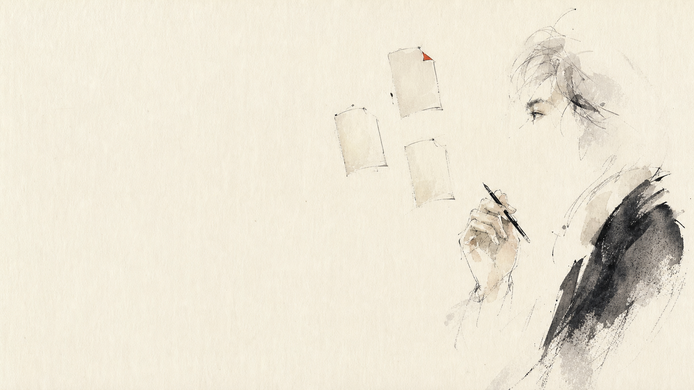

室內設計
前端：丈量、訪談、目標與預算對齊
中段：設計、工班協作、監工與變更
底座：軟體、辦公室、設備折舊、保固

報價第一講 · 成本
接案工作者、小型企業主的「完整成本地圖」
你現在怎麼報價？
價格送出去了，卻沒有人知道：這單到底有沒有賺。
低價不是策略，是一條因果鏈
沒有毛利，就沒有複利；
沒有複利，企業飛輪不會轉。
AI 改變了成本的位置
當產出變快，真正昂貴的錯誤，會發生在「一開始做錯」與「最後沒驗證」。
AI 越能執行，人類前端的定義、後端的審計就越值錢。
第一個被漏掉的成本
第二個被漏掉的成本
誰先做、誰接手、誰能核准。
AI 負責生成；人負責判斷、例外與責任。
卡住怎麼回復？臨時改需求怎麼計價？
流程設計不是免費前置作業，它本身就是專業產出。
第三個被漏掉的成本
品質、格式、成果與不可接受的錯誤。
何時檢查、誰檢查、留下什麼證據。
修改輪次、重工機率、保固與後續支援。
AI 讓「看起來完成」更容易，也讓品質審計更不能省。
看得見的成本
執行工時、會議、交通、修改、外包。
材料、軟體、API、AI token、專案授權。
場地、設備、物流、差旅、臨時供應商。
工時只是成本的一列，不是整張成本表。
成交不是憑空發生
如果通路成本沒有進報價，老闆就只能永遠親自找客戶。
管理不是雜事
排程、進度、跨角色協作、供應商、問題與變更。
回報、會議記錄、版本、檔案、決策與責任邊界。
期待落差、關鍵人溝通、衝突處理與信任維護。
不是只有「手在做事」的時間，也包含「事情不失控」的時間。
公司每天都在呼吸
租金、固定薪資、法定雇主負擔、老闆管理時間。
基本軟體、設備、會計、行政、法務與保險。
品牌、網站、內容、行銷與日常營運。
固定成本不屬於「某一案」，但每一案都必須分攤。
今天沒付款，不代表今天沒成本
折舊，是把一筆長期資產的成本，分配到它服務的每一個期間與專案。
預計使用 4 年、每年 120 案：至少每案分攤 500 元，再加維護與資金成本。
過去的報價從未替下一台設備存錢。
錢進來之後，並不都叫利潤
稅率與稅務處理依組織型態與最新法規確認；模型先建立「分開看」的紀律。
同一張成本地圖，換三種生意來看
前端：丈量、訪談、目標與預算對齊
中段：設計、工班協作、監工與變更
底座：軟體、辦公室、設備折舊、保固
前端：策略訪談、受眾與成效共識
中段：AI 產出、人工驗證、提案與修改
底座：介紹分潤、工具、人才與品牌獲客
前端：諮詢、期待管理與風險告知
中段：技術工時、耗材、空間與閒置產能
底座：設備折舊、固定薪資、回訪關係
成本模型不是拿來套答案，是拿來避免漏問關鍵問題。
帶走一套可以複用的系統
毛利不是多拿，
是讓品質、人才、通路與未來能被持續投資。
第一講：算企業活下去需要多少。 第二講：算客戶因為你多得到多少。